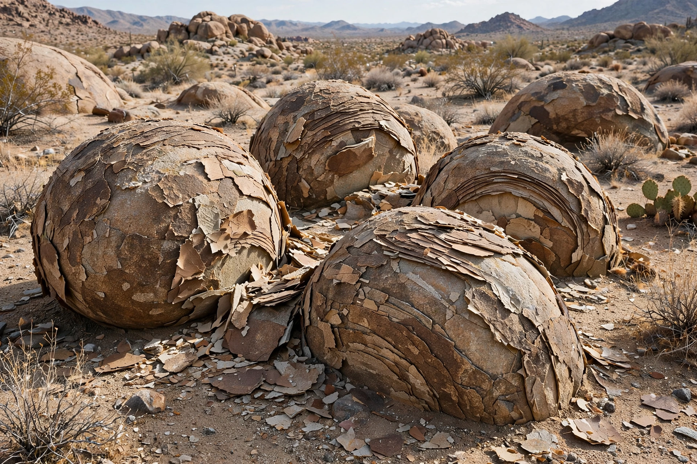

Weathering

Weathering is the breakdown and alteration of rocks and minerals at or near Earth's surface by water, air, temperature change and living organisms. It differs from {L('Erosion','erosion')}, which transports the loosened material away; together the two processes sculpt landscapes and produce soil.
Weathering divides into physical (mechanical) disintegration, chemical decomposition, and biological activity, usually acting in concert.
Types
Physical weathering includes frost wedging, where freezing water expands in cracks; thermal expansion in deserts; pressure release as overlying rock is removed, peeling sheets from granite domes; and salt crystallisation in coastal rocks. Chemical weathering includes dissolution (limestone dissolving in slightly acidic rainwater to form karst caves), oxidation (rusting of iron-bearing minerals) and hydrolysis, which converts feldspar to clay.
Plants pry rocks apart with roots, lichens and microbes secrete acids, and burrowing animals expose fresh surfaces — biological weathering links the surface system to the biosphere.
Importance
Weathering releases the nutrients locked in rock, creates Soil, and moderates climate: the chemical weathering of silicate rocks consumes atmospheric CO₂ and, balanced against volcanic outgassing over millions of years, helps stabilise Earth's temperature (see Carbon cycle). The same processes decay buildings, monuments and infrastructure, a major concern for conservation of stone heritage.
See also: Erosion · Soil · Rock (geology) · Geology · Carbon cycle